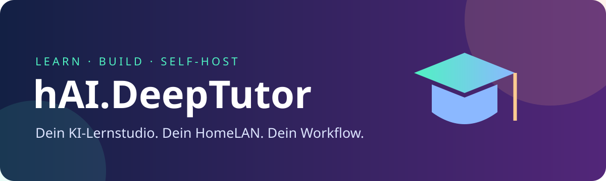

📚 KI-Lernstudio
DeepTutor bietet dokumentgestütztes Lernen. Sprachmodell und Embeddings richtest du in der App ein.

DeepTutor als eigener Container-Build: GitHub baut, GHCR liefert, Portainer betreibt dein Lernstudio.
DeepTutor bietet dokumentgestütztes Lernen. Sprachmodell und Embeddings richtest du in der App ein.
docker-compose.yaml, persistente Daten und dein externes highfishNetwork.
Täglicher Check auf stabile Upstream-Releases. Neuer Commit-Stand? Neuer Build. Kein Update? Kein Build.
https://github.com/jbkunama1/hAI.DeepTutor, Referenz refs/heads/main.docker-compose.yaml verwenden.highfishNetwork sicherstellen, deployen und http://SERVER-IP:8042 öffnen.Keine Pflicht-ENVs. Optional: IMAGE_TAG=latest, WEB_PORT=8042, BIND_IP=0.0.0.0.
Stabiles HKUDS-Release → SHA-Vergleich → Produktions-Build → GHCR → manueller Portainer-Redeploy
Geplant täglich um 03:23 UTC; GitHub kann Zeitpläne verzögert ausführen. Nur erfolgreiche Builds werden als verarbeitet gespeichert. Fehlgeschlagene Builds bleiben beim nächsten Lauf erneut fällig. Manuelle Läufe erzwingen einen Build. Entwicklungs-Commits ohne stabiles Release werden nicht verfolgt.
ghcr.io/jbkunama1/hai.deeptutor:latest
Der Build unterstützt derzeit linux/amd64. Laufende Container werden nicht automatisch aktualisiert. Vor Updates Daten sichern.
Externe LLM-/Embedding-APIs können Inhalte aus dem LAN übertragen. Authentifizierung vor breiter Nutzung einrichten, keine Router-Portfreigabe und keinen Docker-Socket einbinden. Der einfache Stack enthält keinen separaten gehärteten Code-Runner.
Diese statische Seite dokumentiert das Deployment. DeepTutor selbst läuft auf deinem Server, nicht auf GitHub Pages. Anleitung, Backup und Troubleshooting stehen in der README.